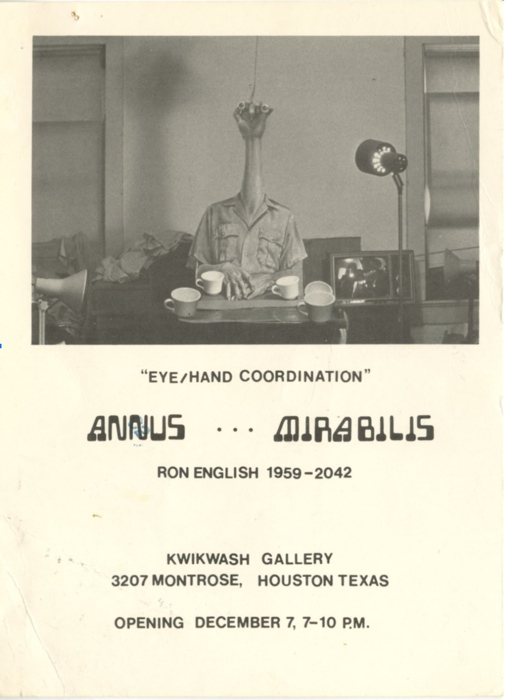
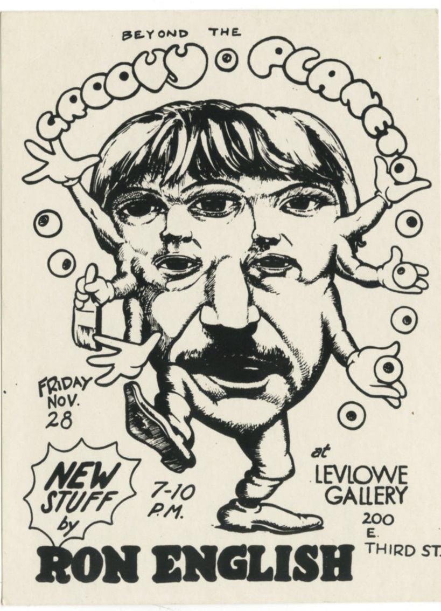
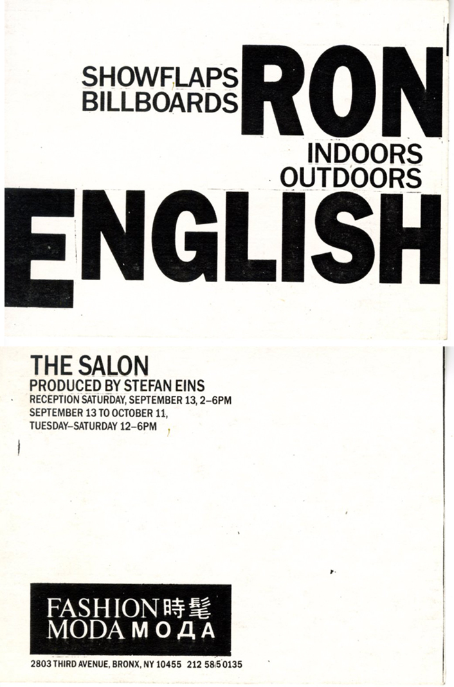
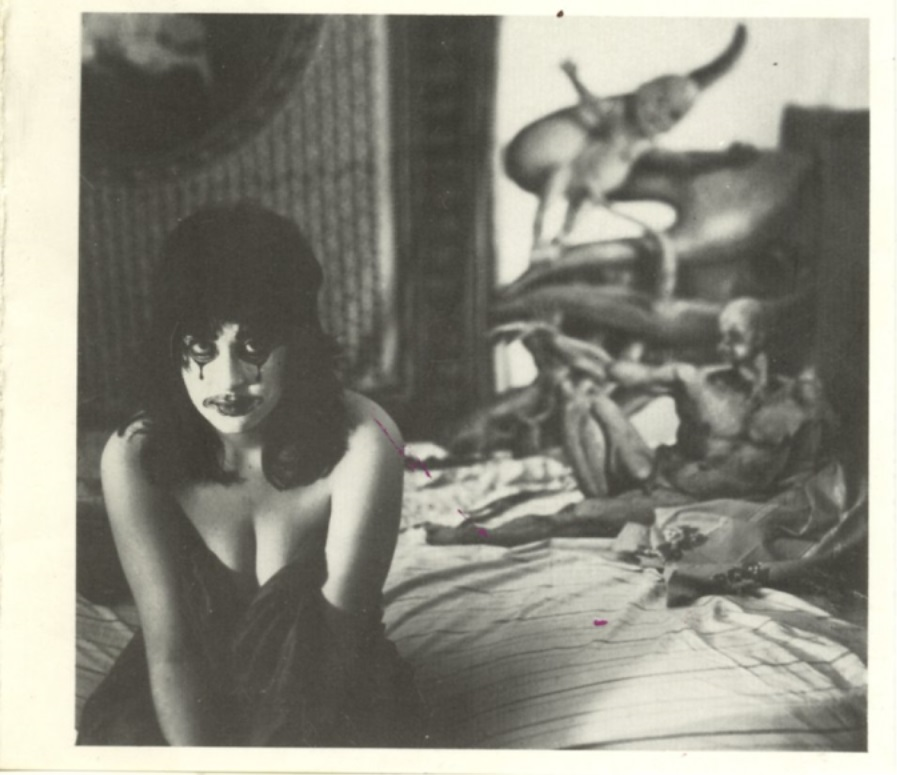

1970s & 1980s Solo Exhibitions
Early solo exhibitions, studio presentations, and experimental shows from Ron English’s first two decades of documented exhibition activity.
Click each image or exhibition title to open the individual entry. Listings may include venue, city, dates, and supporting documentation where available.
Exhibition Listings
Chronological listing of currently documented solo exhibitions for this period.
| Image | Year | Dates | Venue | Title |
|---|---|---|---|---|
|
 |
1980 | December 7 | Kwikwash Gallery | Annus ... Mirabilis |
|
 |
1980 | November 28, 1980 | Levlowe Gallery | Beyond the Groovy Planet |
|
 |
1986 | September 13 – October 11, 1986 | Fashion Moda (Produced by Stefan Eins) | SHOWFLAPS / Billboards — Ron English (Indoors/Outdoors) |

|
1988 | May 19 – June 26, 1988 | The Midtown Y Photography Gallery | Photographs by Ron English |
|
 |
1988 | 11 August – 3 September 1988 | Fotogalerie Prinsengracht 356 | Ron English |

|
1989 | March 4–25, 1989 | OK Harris Works of Art | Ron English |